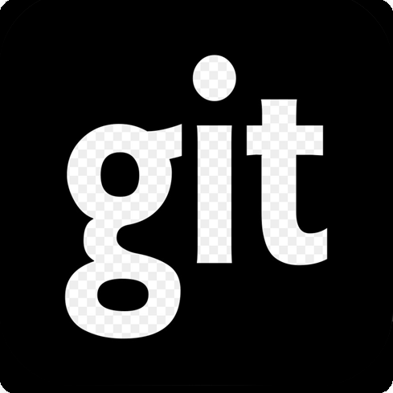

YANG WANG
CONTACT INFORMATION
-
Email: yang6@vt.edu
Phone: +86 13691232240
Architecture Annex Building, Room 109

NEWS
-
Looking for PostDoc Position:
I am actively looking for any PostDoc position related to my previous experience starting from Sep. 2020 in Beijing, China! Please feel free to contact me!
LINKS


I am a third-year Ph.D. student in the Department of Urban Planning at Virginia Polytechnic Institute & State University (Virginia Tech). My research covers a range of topics in Landscape Architecture and Urban Planning and Environmental Sustainability, mostly from data-driven perspectives. In addition, I am also interested in how urban environmental designs impact the sustainability of natural and social environments. My current projects are focused on how specific spatial configurations of vacant urban land could influence stormwater runoff mitigation.
Before joining Virginia Tech, I worked as a Chief Designer at Greenview Landscape Design Limited, Beijing, China for two years (2015 to 2017). I will obtain my Ph.D. from Virginia Tech under the supervision of Todd Shenk in 2020. Furthermore, I obtained my Master from Auburn University under the supervision of David Hill in 2014. Auburn University’s master of landscape architecture (M.L.A.) program is urban design based with emphasis on the role and restoration/regeneration of natural systems within the urban ecosystems/urban vacant land. The studio focuses on creating sustainable/dynamic places to enhance quality of life. Landscape architecture, traditionally it is artificial and emotional while urban planning is more abstract, scientific and theoretical. Finally, I received my Bachelor degree from Capital Normal University in 2008.
(Check my CV/RESUME PDF and MASTER'S PORTFOLIO LANDSCAPE PDF ARCHITECTURE PDFhere)
EDUCATION
-
Ph.D. in Urban Regional Planning Virginia Tech, Blacksburg, USA
Thesis: VACANT URBAN LAND AS A RESOURCE FOR MITIGATING URBAN STORMWATER RUNOFF VOLUMES: CITY-LEVEL CASES IN THE UNITED STATES
Committee: Todd Schenk (Chair), Diane Zahm, Wenwen Zhang
GPA: 3.90/4.00
-
M.S. in Landscape Architecture Auburn University, Auburn, USA
Design Thesis: Designing a High-Performance Sustainable Mixed-Use System within Downtown of Auburn PDF
Committee: David Hill (Chair), Charlene LeBleu, Rod Barnett (in Washington University)
GPA: 3.17/4.00
-
B.S. in Environmental Art Design Capital Normal University, Beijing, CHINA
Thesis: A Dialogue of Tradition and Modern - Research on the Symbolic Language of "Window"
Advisor: Mingyang Xie, Jie Xie
GPA: 3.20/4.00
-
College Degree. in Three-dimensional Design on Environmental Art and Architecture Capital Normal University, Beijing, CHINA
GPA: 4.00/4.00
RESEARCH EXPERIENCE
-
Research Specialist
-
Investigation and Analysis the Building Information Modeling (BIM) transform Landscape Building Information Modeling (LIM)
Greenview Landscape Design Limited, Beijing, China
Concentrated Area: Use visualization, as the driving force, and digital tools to improve the rigor in order to arrive at systematic logic chains for true solution of urban environmental problems
-
-
Research Specialist
-
Investigation and Analysis the Spatial Patterns of Urban Expansion in Beijing, China
Greenview Landscape Design Limited, Beijing, China
Concentrated Area: Applies the integrated method of Remote Sensing and GIS to examine the dynamic changes, spatial patterns, traffic locations, barycenter migrations, allometric growth and driving mechanism of urban land expansion in Beijing, China
-
-
Research Specialist
-
Data Mining and Quantitative Statistical Analysis that can be used in Landscape Post – Occupancy Evaluation
Greenview Landscape Design Limited, Beijing, China
Concentrated Area: Applications of variance analysis, and correlation analysis which was frequently used in landscape assessment work, aiming at finding scientific-practical methods to Landscape Post – Occupancy Evaluation
-
-
Research Coordinator and Project Manager
-
Investigation and Analysis of Overall Suburban Park Planning in Beijing Area, China
Greenview Landscape Design Limited, Beijing, China
Concentrated Area: Research on urban greenway by applying GIS analysis between the year of 1991 and 2005, and research on relationships between human behavior and the built sustainable environment
-
-
Research Specialist
-
Initial Exploration of Landscape Architecture of the United States – Focusing on Philosophies of Scientific Research
Greenview Landscape Design Limited, Beijing, China
Concentrated Area: A case study of rational analysis in landscape planning of the United States
-
-
Research Assistant and Project Manager
-
Pilot Study of Ecological Restoration Planning – Investigation of Current Greenland by applying a GIS analysis in Haikou City, China
Beijing ECOLAND Planning and Design Corp, Beijing, China
Concentrated Area: GIS analysis and quantitative data mining & analysis of railways, expressways, hyper tension cable corridors, areas of villages, water systems and mine areas
-
-
Research Assistant
-
Mississippi Riparian Landscape Investigation
College of Architecture, Design and Construction, Auburn University – Auburn, AL, USA
Concentrated Area: Data collection and map analysis
-
RESEARCH CONFERENCE
-
Research Specialist
-
Beijing Forum 2016 held by Peking University, China
Concentrated Area: Ecological Security and Ecological Urbanism
-
-
Graduate Student
-
Council of Educators in Landscape Architecture (CELA) Conference, Austin, TX, USA
Abstract Topic: Protection of Marine Species by Creating Ecological Environment in Mobile Bay
Concentrated Area: Describe existing problems of waterscapes in Mobile Bay. Analyze current methods of processing waterscapes. Explain the impact of waterscape ecological environment development on Mobile Bay’s marine species. Critique the implication of possible future sustainable waterscape ecological environment
-
WORK EXPERIENCE AND INTERNSHIP
-
Chief Designer
-
GREENVIEW Landscape Design Limited, Beijing office, China
Selected Projects: Suburban park landscape design (research) in Beijing, China. Residential area landscape design of Yushuwan in Zhangjiakou City, China
Responsibility: Site research analysis, concept design, design development
-
-
Design Director
-
Beijing DNL Landscape Design Company, Beijing, China
Selected Project: Ecosystem wetland park of Longtan Yu, Jin Cheng, Shanxi, China
Responsibility: Project management
-
-
Project Manager
-
Beijing ECOLAND Planning and Design Corp, Beijing, China
Selected Project: Landscape urban planning of Sanya in Hainan, China
Responsibility: Project management, master plan design, and graphic draft
-
-
Summer Intern
-
EDSA, Fort Lauderdale, USA
Responsibility: Site design, draw master plan, and graphic draft
-
SELECTED PUBLICATIONS
-
JOURNAL ARTICLES
-
Yang Wang. (2016). A Preliminary Study of the American Landscape Planning under the Guidance of Pure Rationalism. Journal of Green Science and Technology (China), 17, 158 – 160. ISSN 1674 – 9944, Article Number: 001617145.
-
Yang Wang. (2016). An Elastic Way of Urban Planning – Planning of Vacant Land in Cities. Journal of Green Science and Technology (China), 18, 164 – 166. ISSN 1674 – 9944, Article Number: 001618340. PDF
-
Yang Wang. (2016). A Research on Planning of Country Parks – A Prelimary Study of Country Parks in Beijing. Xiandai Horticulture, 10/2016. ISSN: 1006 – 4958.
-
-
-
PROJECT AND DESIGN EXPERIENCE
Participated in country parks landscape design & research in Beijing, China PDF
Participated in residential areas landscape design of Yushuwan in Zhangjiakou, China
Participated in business plaza landscape design of Rongchen Times in Zhangjiakou, China
Participated in residential areas landscape design of Lingxiucheng in Zhangjiakou, China
Participated in park landscape design of Langfang in Hebei, China PDF
Participated in park landscape design of Fujiang in Heilongjiang, China PDF
Participated in residential areas landscape design of Jinkexingchen in Qidao, China
Participated in residential areas landscape design of Kongquecheng in Hebei, China
Participated in residential areas landscape design of Fenghuang in Jiangsu, China
Participated in business center of Jinke in Wuxi, Jiangsu, China
Participated in business space of Dianshanggang in Guangdong, China
Participated in business plaza of Yuechuan in Sanya, China
Participated in residential areas landscape design of Gaobei Dian in Hebei, China
Participated in residential areas landscape design of Xiangyixigu in Hebei, China
Participated in business plaza landscape design of Shijiazhuang in Hebei, China
Participated in ecosystem wetland park of Longtan Yu, Jin Cheng, Shanxi, China PDF
Participated in landscape urban planning of Sanya in Hainan, China
Participated in outdoor sport center (ecological restore), Detailed Construction Planning, Haikou, Hainan, China
Participated in the interior and landscape design of Chifeng Hotel in Inner Mongolia
Assisted Pro. Liu of Academy of Fine Arts, Tsinghua University to accomplish the furniture design of the National Artworks Exhibition
(Check my SELECTED WORK PORTFOLIO PDF here)
TEACHING EXPERIENCE
-
Teacher in the workshop
-
Chris International Art Education – Beijing, China
Taught making portfolio for application to university’s students
Concentrated Area: Related to landscape architecture education and affective communication methods
-
-
Teacher in Landscape Architecture Studio
-
College of Fine Arts, Capital Normal University – Beijing, China
Concentrated Area: This studio is a mixture of projects and serves as a capstone project for students expecting to graduate in the Bachelor’s program. The student selected professional-level projects including design-build projects or substantive research projects are carried out. The exit studio synthesizes and builds on skills developed throughout the landscape architecture program
-
AWARDS & HONORS
-
The Honor Society Sigma Lambda Alpha
-
College of Architecture, Design, and Construction, Auburn University – Auburn, AL, USA
-
-
Excellent Graduate Thesis
-
College of Fine Arts, Capital Normal University – Beijing, China
-
-
Honored as Excellent Learner in the Military Training
-
College of Fine Arts, Capital Normal University – Beijing, China
-
SKILLS
-
Programming
-
Python, HTML, JavaScript
-
-
Urban Moelling
-
ArcGIS, GisPro
-
-
Statistics
-
SPSS, Tableau
-
-
Design
-
Photoshop, Illustrator, InDesign, AutoCAD, 3D Studio MAX, SketchUp Pro, Rhino, V-RAY, Grasshopper
-
-
Hydrology Simulation Modelling
-
Storm Water Management Model (SWMM)
-
-
Hobbies
-
Painting, Sketching, Traveling
-
-
Languages
-
English, Standard Chinese (Native)
-